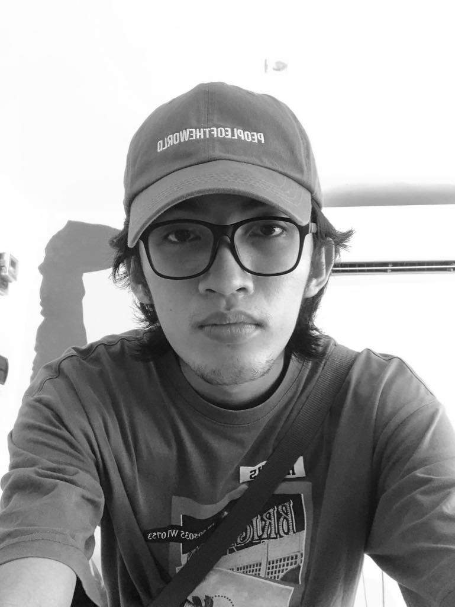

WELCOME TO MY PORTFOLIO SITE!

just your regular CS student

ABOUT ME
I’m a third-year Computer Science student with a passion for creativity and innovation. Alongside my studies, I specialize in graphic design and UI/UX design, combining technical skills with artistic vision to create intuitive and visually engaging digital experiences. Whether it’s crafting sleek user interfaces or bringing ideas to life through design, I thrive at the intersection of technology and creativity.